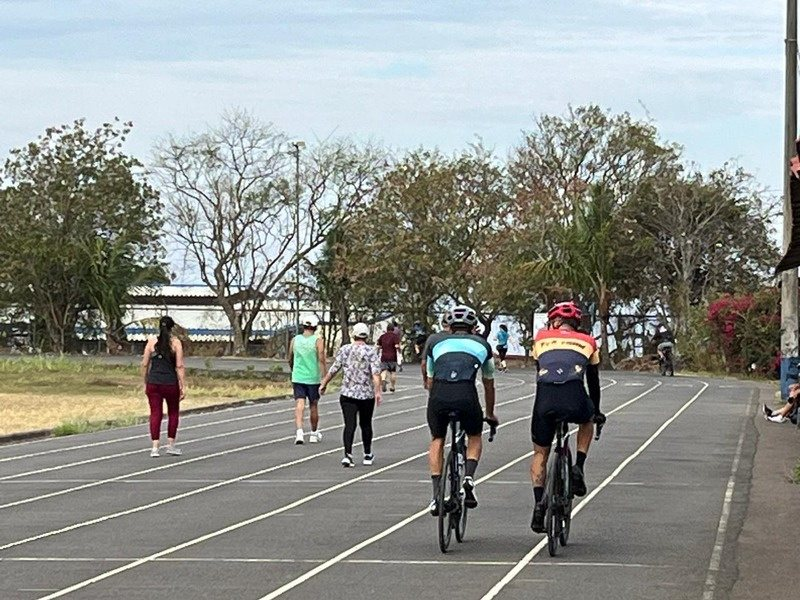
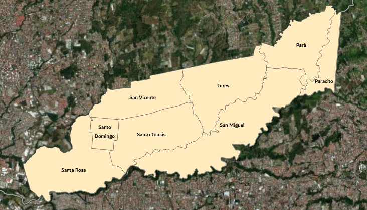

Mural en el parque El Orgullo
Invitamos a la comunidad a una nueva sesión de trabajo para el mural del parque.
Distrito de Paracito
Estudiantes de siete carreras trabajamos con las comunidades para que participen en la creación y actualización de los planes reguladores. Hoy lo hacemos en Santo Domingo de Heredia.
El TCU-742, Integración de las comunidades en los procesos de trabajo de planes reguladores, nació en 2020. Un TCU es una modalidad de Acción Social de la UCR: estudiantes y docentes se vinculan con grupos sociales y comunidades para contribuir a las transformaciones que la sociedad necesita.
Promovemos la participación comunitaria en la creación o actualización de planes reguladores. Hoy trabajamos en Santo Domingo de Heredia, con posibilidad de extendernos a otros cantones.

Un recorrido por quiénes somos, cómo trabajamos con las comunidades y qué buscamos con los planes reguladores.
Sensibilizar y desarrollar conciencia social y crítica en la comunidad universitaria.
Colaborar con las comunidades para identificar sus problemas y crear soluciones donde participen de forma activa.
Promover procesos colectivos y autónomos que incidan en el entorno socioambiental, sin generar dependencia de la Universidad.
Construir procesos de enseñanza y aprendizaje a partir del intercambio entre disciplinas.
Son sesiones abiertas a la comunidad. Anunciaremos las fechas en nuestras redes.
Invitamos a la comunidad a una nueva sesión de trabajo para el mural del parque.
El subgrupo de Patrimonio Cultural prepara un taller sobre edificaciones históricas: sus familias, usos y técnicas constructivas.
Cada equipo atiende un aspecto distinto de la vida en el cantón, con trabajo de campo y con la comunidad.
Publicaciones en Facebook, Instagram y YouTube.
Revitalizar espacios recreativos en varias comunidades.
Plantar árboles nativos en las aceras.
Dar a conocer edificaciones con potencial patrimonial.
Recopilar el estado de las aceras con trabajo de campo y digitalización.
Analizar los factores físico-espaciales que influyen en la percepción de inseguridad.
Datos sobre descargas de aguas residuales con SIG y educación a la comunidad.
Medir velocidades vehiculares y aplicar encuestas para definir qué ciclovía se necesita.
Fotografías de las actividades del TCU con estudiantes, vecinos y vecinas del cantón.





El cantón se divide en ocho distritos, y nuestros proyectos se reparten entre ellos, como Paracito y Santo Tomás en 2026.

San Pedro, Montes de Oca. Puedes ver cómo llegar en Google Maps.